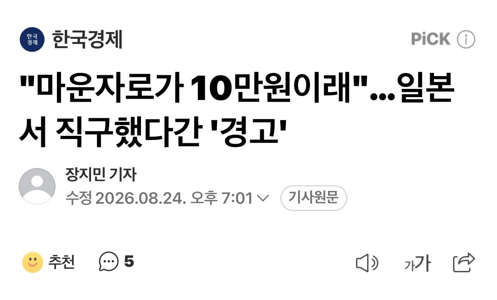
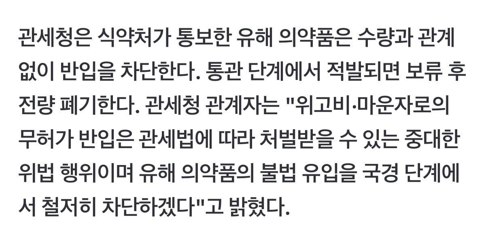
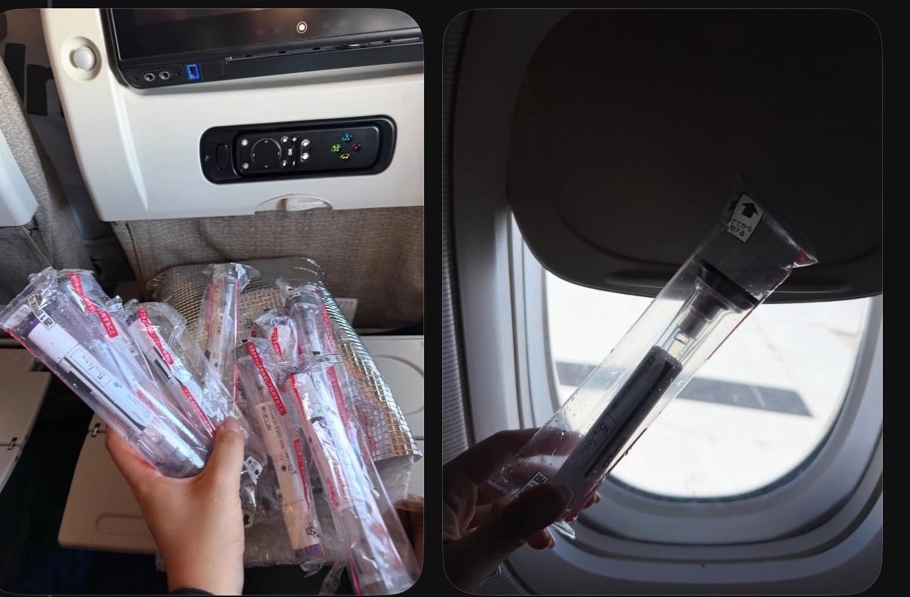

https://n.news.naver.com/article/015/0005324144    쓰레드엔 직구 인증글 올린 사람도 있음
댓글
수집 당시 댓글 41개
슬리퍼싸대기 · 12 시간 전
감히 싸게 살려고 해?
OヮO · 12 시간 전
??? : 마운자로 , 위고비는 유해약품이다 요약하면 이거지?
광개토대마왕 · 11 시간 전
스시자로 ㅋㅋㅋㅋ
메넨데즈 · 11 시간 전
불법이 아닌데 불법이라고 협박하네 ㅋㅋㅋㅋㅋ 유해 의약품이면 한국에선 왜 파는거임
STHSTK · 4 시간 전
다른 제품일 수 있어서 그런가
OROS · 1 시간 전
인도도아니고 절대없음ㅋㅋ
닉드코바 · 11 시간 전
벌금아니고 걍 경고?ㅋㅋㅋ 이럼 무조건 하지 ㅋㅋㅋ
어뎁터 · 11 시간 전
경고 ㅇㅈㄹ ㅋㅋㅋ
5783578965 · 11 시간 전
킹중갓고 좆까세요시팔러마 ㅋㅋㅋㅋㅋㅋㅋㅋ 느그새끼들 일처리하는것만 봐도 이가갈려 개새끼들아 직구만 15년을 해왔는데 관세청이라 하면 일단 눈빛부터 바꾸고 야려줄 자신 있음 ㄹㅇ
롤링스콘즈 · 11 시간 전
국민 건강보단 역시 마약 들여와서 다 죽여버리는게 빠르긴해
개봉개봉 · 11 시간 전
저게 공항에서 안걸릴수가 있나?
헬스장샤워실오줌싸기장인 · 11 시간 전
ㄹㅇ무조건 걸리는거아닌가? 가방 바구니에 놓고 X-RAY 검사같은것도 하던데
달빛찬가 · 10 시간 전
들고타는 수하물 엑스레이는 출국할때만 하지 입국할땐 안해 가끔 랜덤으로 한명씩 잡아서 검사하지
라만챠 · 11 시간 전
기내수화물의경우 전수 조사를해야하는데 모든 비행기를 전수조사하면 입국장 터짐
천마신교주 · 11 시간 전
나라 존나 잘돌아간다
hans · 11 시간 전
와이프 일본인인데 일본인이 개인목적으로 맞는것도 뺃기냐?
피망조아 · 8 시간 전
처방전 있어도 뺏는거 같던데
별의귀환 · 7 시간 전
한국에서 사갔던 마운자로를 다시 들고와도 빼앗김 ㅋㅋㅋ 그냥 존나웃김
서강준 · 11 시간 전
사서 갖고와도 됨??
베체 · 10 시간 전
나머지 싸오다가 걸려도 한국보다 싸네
굴렀던곰 · 10 시간 전
대마도에 주말마다 배타고 한방 맞고 오면 싸게 먹히는거 아님?
Ang마사냥꾼 · 10 시간 전
일본 여행 간김에 사들고오면.... 걸리려나?
서어엉자아앙 · 10 시간 전
전에 글 보니까 걍 들고나가고가 안된다는거 같던데
어떡하냐..ㅅㅂ · 10 시간 전
기내수화물로 도박할만한가?
개복치순욱 · 10 시간 전
4번중 1번만 통과되면 본전 ㅋㅋ
도르마무 · 56 분 전
할만하긴 한데 하다가 걸리면 나중에도 입국할때 요주의인물로 찍혀서 랜덤검사 당첨될 확률 높다던데 진위여부는 모르겠음
다이나비 · 9 시간 전
왜 유해의약품이야?? 일본산 위고비 마운자로는 우리나라산이랑 성분이 다른가?
qtemfkd · 8 시간 전
위고비 마운자로 원성분을 일본에서 생산함 그거 갖다 인디같은데서 제조하는거. 그래서 일본이 싸고 인도가 싼거야
다이나비 · 7 시간 전
헐 글쿤 빨리 k비만약 신토불이 나왔음좋겠군
하루만더 · 9 분 전
한국에서 처방받은 위고비 마운자로를 해외 가지고 나갔다가 다시 들어와도 압수당함ㅋㅋㅋㅋ 마약도 이정도로 심하게 전수조사는 안했음
절세기회 · 9 시간 전
으디 노예놈들이 건강해지려고 허락도없이 살을빼
전I여친 · 9 시간 전
ㅅ발련들아 그럼가격을내려맞짱깔새끼드라!!!
INTP · 9 시간 전
스시자로ㅋㅋ
주관적인요정 · 8 시간 전
이건 한국이 비싼 잘못인거지 고객은 원래 싼거 찾아가는게 정상이야
쥐드립넷 · 7 시간 전
한국은 도대체 뭐가 문제냐 왜 늘 국민이 호구포지션임
가시돋친맨 · 7 시간 전
관세랑 복지부는 왜 이렇게 혈안이지? 그러면 국내 요통되는거부터 막아라 잘 팔리니 릴라이릴리가 가역 안내리는거지 ㅋㅋ 종로에서 처방하는것 부터 막던가
메모장23 · 6 시간 전
방금 보니까 식약처가 보건복지부에서 빠진 지 오래됐네
카페인농축액 · 5 시간 전
대체 왜 이렇게 거품 무는 거임?
흰둥이응가 · 5 시간 전
근데 저거 냉장보관 안해도 괜찮나? 예전에 중국 친구가 직구해준다는거 거절했는디
도르마무 · 55 분 전
식약처에서 직구 막는 논리가 이거임. 유통방법이 잘못되어서 변질될 가능성이 높아 직구 금지
버팔로1122 · 4 시간 전
우리나라에서도 멀쩡히 파는 의약품이 다른나라에서 사가지고 들어오면 불법이 되는거야? 왜?